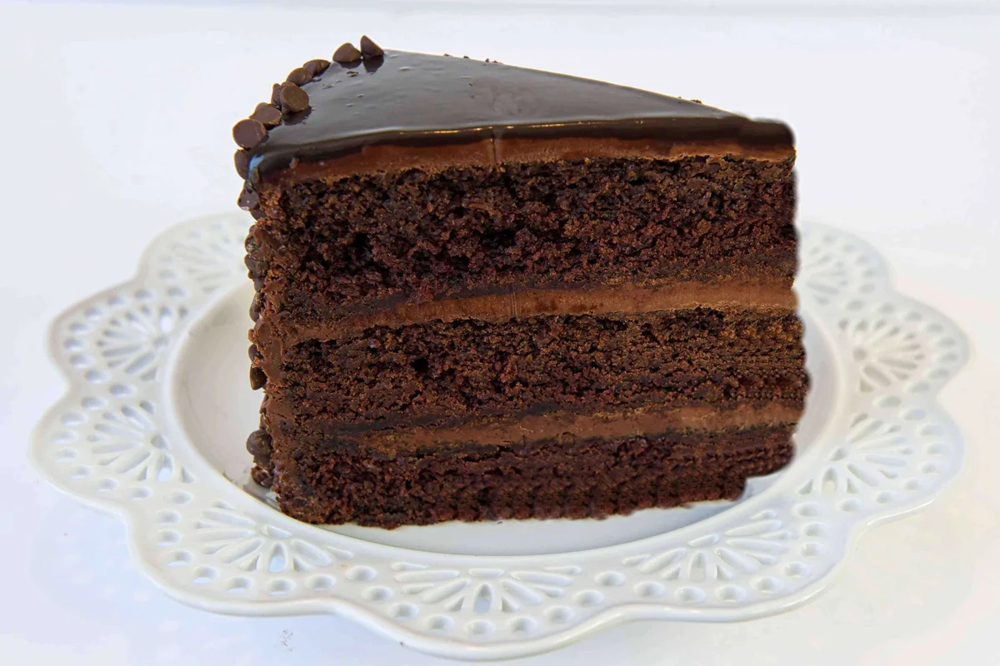

Chocolate Cake

Perfectly Simple Chocolate Cake For Any Occaision
If you are looking for a perfecty simple desert that will please any crowd without
requiring excessive time out of your busy schedule, this is the chocolate cake recipe
for you! All you are going to need are a few basic ingredients and tools that are easy
to come by in most any kitchen.
Ingredients
- 2 cups sugar
- 1-3/4 cups all-purpous flour
- 1-1/2 tsps baking powder
- 1-1/2 tsps baking soda
- 1 tsp salt
- 2 eggs
- 1 cup milk
- 1/2 cup vegetable oil
- 1 cup boiling water
Steps
- Heat oven to 350°F. Grease and flour two 9-inch round baking pans.
- Stir together sugar, flour, cocoa, baking powder, baking soda and
salt in large bowl. Add eggs, milk, oil and vanilla; beat on medium
speed of mixer 2 minutes. Stir in boiling water (batter will be thin).
Pour batter into prepared pans.
- Bake 30 to 35 minutes or until wooden pick inserted in center comes out
clean. Cool 10 minutes; remove from pans to wire racks. Cool completely.
Frost with your favorite chocolate frosting and it's ready!